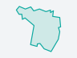
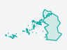

대시보드
LX 직원님 · 10월 7일 화요일 · 내 프로젝트 4 · 내 서비스 4 · 시범 적용 7곳 · 지금 돌고 있는 분석 없음
시군구 검색 — 바로 분석하기분석하기
내 작업 현황
내 정보- 내 서비스4개시범 적용 7곳 · 운영 0곳서비스 카드
- 프로젝트4개내가 만든 4 · 참여 0 · 보관 0프로젝트
- 저장 용량29.8MB 사용할당 없음 — 프로젝트 4개 합저장 관리
- 나에게 온 것0검토 요청1분석 요청4개선 후보요청함
프로젝트 진행 현황
프로젝트350끝난 내 작업 · 9.26 – 10.01 · 취소 36 · 실패 1 은 뺌
- AI 분석 220
- 필지 대조 104
- 위성 지수 18
- 학습 6
- 영상 준비 2
- 비닐하우스 2026증평군 외 2곳서비스 관리 · 표본 확인 0/20 · 새 영상 1
- 건축물 2026원주시서비스 관리 · 표본 확인 0/20
- 주차장 2026여주시 · 천안시 서북구서비스 관리 · 표본 확인 0/20
- 곤포사일리지 2026보령시서비스 관리 · 표본 확인 0/20
- 건축물 · 3번째 학습09.30 20:57100%
- 건축물 · 2번째 학습09.30 19:49100%
- 주차장 · 1번째 학습09.30 18:48100%
- 곤포사일리지 · 1번째09.30 17:10100%
공지사항
공지사항AI 교육정보- 10.06영상 형식 표준 적용 안내새로 올리는 영상은 표준본으로 저장됩니다
- 10.02연휴 기간 분석 대기열 운영10.3–10.9 분석은 다음 날 아침에 끝납니다
- 09.30임시 비밀번호 바꾸기 안내첫 로그인 뒤 내 정보에서 바꿔 주세요
- 09.26전국 하천구역 건물 점유 분석 결과 공유252개 시군구 · XI맵에서 열기
- 10.05학습데이터 만들기 안내서라벨 그리기 · 검증용 나누기 · 표본 20건 보기
- 09.24항공영상으로 비닐하우스 찾기 — 실습 영상40분 · 남원시 예시
- 09.10필지 대조 결과 읽는 법대장과 다른 후보 · 현장 확인 필지
- 08.20학습용 데이터 구축 안내서(QGIS)구 Land-XI 공지에 있던 자료
예시 — 지금 공지 0 · 교육 자료 0모두 보기
작업 이력
기록- 10.01 12:48남원시 영상 준비2023 항공영상 — 비닐하우스 2026 다시 분석 가능끝
- 10.01 12:01천안시 서북구 필지 대조대장과 다른 후보 337필지끝
- 10.01 12:00천안시 서북구 AI 분석건물 1,158동 · 13.0 km²끝
- 09.30 20:57건축물 2026 학습3번째 학습 · 모델 후보 등록끝
- 09.30 19:49건축물 2026 학습2번째 학습끝
끝난 내 작업 350건 가운데 최근 5모두 보기
프로젝트 메모
프로젝트 한 장의 메모- 비닐하우스 2026LX 직원메모 없음쓰기
- 건축물 2026LX 직원메모 없음쓰기
- 주차장 2026LX 직원메모 없음쓰기
- 곤포사일리지 2026LX 직원메모 없음쓰기
자동 기록은 31건 · 메모 0 · 파일 0기록
개인 메모
서버에 더할 것증평군 표본 10건은 내일 오전에 보기10.06 · 나만 보는 메모
원주시 결과 — 여주시와 견준 뒤 보고10.01
메모 남기기 — 나만 봅니다저장
즐겨찾기 프로젝트
즐겨찾기는 서버에 더할 것 — 지금은 내 프로젝트 4| 번호 | 프로젝트 | 프로젝트장 | 학습 표본 | 저장 용량 | 만든 날 | 마지막 |
|---|---|---|---|---|---|---|
| 1 |  비닐하우스 2026증평군 · 함양군 · 남원시 비닐하우스 2026증평군 · 함양군 · 남원시 | LX 직원 | 200장 | 10.2 MB | 10.01 | 10.01 |
| 2 |  건축물 2026원주시 건축물 2026원주시 | LX 직원 | 139장 | 8.7 MB | 10.01 | 10.01 |
| 3 |  주차장 2026여주시 · 천안시 서북구 | LX 직원 | 170장 | 9.0 MB | 10.01 | 10.01 |
| 4 |  곤포사일리지 2026보령시 | LX 직원 | 60장 | 1.9 MB | 10.01 | 10.01 |
즐겨찾기 서비스
구 워크플로우 자리 — 내 서비스 4| 번호 | 서비스 | 찾는 것 | 적용 지역 | 상태 | 공개 |
|---|---|---|---|---|---|
| 1 | 비닐하우스 서비스1.0판 · 비닐하우스 2026 | 비닐하우스(단동 · 다동) | 증평군 외 2곳 | 시범 3곳 | 09.30 |
| 2 | 건축물1.0판 · 건축물 2026 | 건물 | 원주시 | 시범 1곳 | 09.30 |
| 3 | 주차장1.0판 · 주차장 2026 | 주차장 | 여주시 · 천안시 서북구 | 시범 2곳 | 09.30 |
| 4 | 곤포사일리지1.0판 · 곤포사일리지 2026 | 곤포사일리지 | 보령시 | 시범 1곳 | 09.30 |